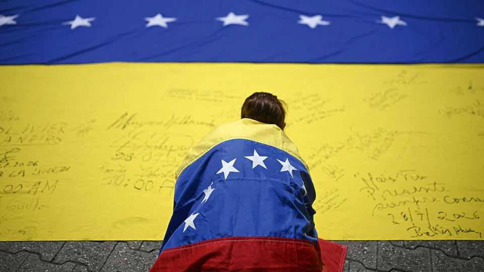
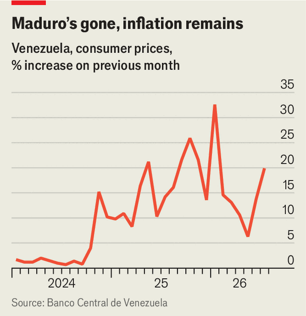

Inside Venezuela’s high-stakes political negotiations
Maria Corina Machado’s absence does not mean they will fail

Aug 13th 2026
“It’s disrespectful, it’s obscene, it’s spitting in their faces.” That is how Jorge Rodríguez, the president of Venezuela’s rubber-stamp National Assembly, described the idea of discussing institutional reforms just weeks after two big earthquakes struck the country. He should have asked the victims. “Any change that removes power from the current government in any way is positive,” says Francis Riascos, camped by the rubble and hoping to find his brother’s body.
Nor did Mr Rodríguez convince Marco Rubio, the US secretary of state, who has wielded enormous influence in Venezuela since special forces seized the dictator Nicolás Maduro in January. Three days after Mr Rodríguez slammed the idea, he U-turned and announced talks with the opposition on exactly such matters. Mr Rubio soon conspicuously praised the plan.
Talks began in person on August 6th. The United States chose Dinorah Figuera to lead the opposition team. She was the president of the National Assembly elected in 2015, the last Venezuelan legislature recognised by the United States. The other five negotiators are also exiled deputies from the same assembly. The regime’s team is led by Mr Rodríguez. His sister, Delcy Rodríguez, is the interim president and was Mr Maduro’s deputy.
After six days of talks the first round ended on August 12th with a joint statement promising more work, and an initial agreement on a process of judicial reforms including a new appointment mechanism for the justices of the Supreme Court. Paola Bautista de Alemán, a senior member of Ms Figuera’s party, called it “a major step towards democracy”. They also agreed to work together on recovering gold reserves frozen at the Bank of England to be used to help earthquake victims.
This is the first big attempt by Donald Trump’s government to reshape Venezuelan politics since the January raid. Until now it has focused on trying to boost oil and mining to the benefit of American businesses. The talks are controversial. They do not include María Corina Machado, the leading opposition figure. The regime, which has clung to power for 27 years, is skilled at ensuring dialogue produces no serious change. Yet there are reasons for hope. The negotiation agenda is sensible. Ms Machado’s absence for now is manageable. Most important, the Trump administration has extraordinary leverage. Much depends on its intentions.
American hands are everywhere. The administration has been working with Ms Figuera since February and was involved in warm-up meetings in Madrid to hash out the agenda. In Caracas the opposition’s negotiating team stayed at the Marriott hotel, from which the United States runs much of its embassy operations. The team moves in embassy cars and their security is guaranteed by the United States. Ms Figuera talks directly to Mr Rubio about progress. The Trump administration forced the regime to the table.

There are good reasons the talks are happening now. In Washington, with midterms looming, Republicans and Democrats are demanding progress on elections in Venezuela. Moreover, Venezuela’s oil sector, Mr Trump’s priority, is not booming, which is making economic stabilisation harder (see chart). The government’s sluggishness in clarifying the new tax regime and investor doubts about the rule of law have resulted in few oil deals so far. The Trump administration may have concluded that to attract serious investments they must first show political progress.
The official agenda has three parts: helping victims of the earthquakes; strengthening democracy; and political rights and guarantees. Working groups are being set up for each area. Under strengthening democracy, the most important issues are reforms to the electoral council and the Supreme Court. These run and adjudicate elections—and brazenly allowed Mr Maduro to steal the presidential election in July 2024, which was actually won by the candidate Ms Machado backed.
Expect intense negotiations over who will sit on the five-person electoral council and in the Supreme Court’s electoral and constitutional chambers. Many opposition politicians have been banned from running and their political parties co-opted by the regime. Negotiators will argue about reinstating these political rights. The timeline is brisk. Ms Figuera says reform of the electoral council is an “assignment that we have to deliver” by December. For the Supreme Court the deadline is November, and for political rights, October. The boss setting these targets is surely Mr Rubio.
The regime’s priority is relief from sanctions and access to frozen state resources. That is partly why helping earthquake victims, important but not disputed, is on the agenda. Including it enables wider discussion on access to offshore funds.
The Economist understands two other topics will at least be discussed. The fate of political prisoners, omitted from the official agenda, is expected to feature on the margins. About 380 such prisoners remain behind bars, though some 900 have been freed since January. The second is guarantees for those who lose power after elections, a crucial and difficult topic. If Ms Rodríguez and her inner circle believe that losing elections means rotting in jail for their crimes, they will do everything they can to avoid real concessions.
Many Venezuelans hope the negotiations culminate in a full election timetable. That is unlikely. Instead, it will be up to the new electoral council to set out a schedule. At best, the negotiators may agree broad timeframes for elections for the electoral council to flesh out. The regime may well press to begin with regional elections, so as to delay a presidential poll.
The ongoing negotiations will be fiendishly difficult. The two sides don’t even agree on what they are about. The opposition believes they are negotiating an end to dictatorship. The regime sees talks as a way to manage a long-running, two-sided political conflict. The dynamics within the regime are growing more difficult, too. Elías Jaua, a vice-president of Venezuela under the late Hugo Chávez, is furious at the “pillage” of the country by the “plutocracy” of the United States. He describes Ms Rodríguez as the “colonial governor” and says the Venezuelan political class must now stand up more firmly to the Trump administration. He rejects these talks and wants ones which include all elements of Venezuelan politics.
The regime is expert at playing for time and reneging on promises. This is at least the eighth formal dialogue and the 18th initiative to hold talks of any kind since 1999. Yet the regime is still in power. The Trump administration lacks expertise in Venezuela and appears to be improvising, says Phil Gunson, who is based in Caracas for the International Crisis Group, a think-tank. To the opposition’s dismay, the United States will not always be in the room for meetings between the two sides.
Still, Mr Rubio is deeply invested in success in Venezuela. He has extraordinary power over the regime. All Venezuela’s oil revenue, more than $14bn this year so far, goes to accounts at the US Treasury. Disbursements to the regime are made only with approval, ultimately, from Mr Rubio. The latent military threat also matters. Defying the country that recently seized your president is a different prospect to ignoring Norway, which facilitated the most recent talks in 2022. Indeed, since January 3rd, the ruling cabal has bent over backwards to please Mr Trump, including ramming through a new oil law, extraditing a former cabinet minister and co-operating with the United States on security.
It is less clear that the Trump administration will use this leverage to push for a transition to democracy. Though Mr Rubio appears committed to elections, Mr Trump does not. “Delcy’s been doing a fantastic job,” he enthused again in July.
The other big worry is that Ms Machado is not involved. That, too, is an American choice. The administration apparently thinks that because she is a potential candidate, she should not help to set electoral rules. The regime also loathes her, and so her presence might have made it harder to get it to negotiate and thus increased the risk that the talks collapse.
Ms Machado had a very different plan for negotiations. In late May she convened the numerous opposition parties in Panama, where they publicly agreed that she would lead talks. The United States paid no heed. She was also twice blocked, partly by the Trump administration, from returning to Venezuela after the earthquakes. She remains in Panama.
All this has also divided the opposition. Justice First, Ms Figuera’s party, says they immediately informed Ms Machado of the United States’ plan when it emerged in April. Ms Machado, however, maintains that she was simply not consulted. Both opposition political parties now in the negotiations were among those that agreed in May in Panama that Ms Machado would lead any negotiations. Some close to Ms Machado are talking of “betrayal”.
Justice First is keen to emphasise that they invited Ms Machado to join a group of senior figures for consultation and decision making to guide the negotiators, but that she did not accept. “Trust is broken,” says Henry Alviárez, who leads Ms Machado’s party in Venezuela today. Ms Machado nonetheless promises not to obstruct the talks and to judge them on their results.
Her absence hurts the talks’ legitimacy. They still have a chance to lead to institutional reforms and a path to elections, but if Ms Machado were in Venezuela and backing the talks, her huge public support would add pressure for the regime to make concessions. Her absence is also a problem for discussions about guarantees for losers. Under free elections, she is the most likely next president. For guarantees to be credible, the regime must believe she will uphold them.
The regime’s position is that Ms Machado is legally barred from standing as a candidate. Her supporters worry that the Trump administration may indulge this in the belief that it will ease the transition. Ms Machado herself angrily rejects the idea.
Such a stitch-up seems unlikely. Yet, as with so much in Venezuela, it depends on Mr Rubio and, above all, on Mr Trump. ■